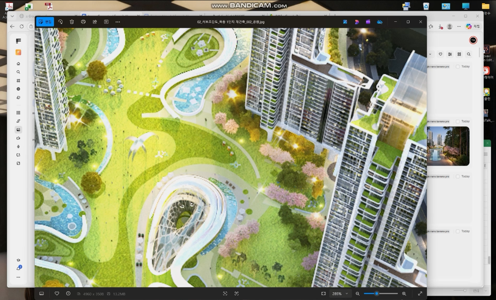

01
법적 조건을 규칙으로 두고 대안을 자동 탐색,
정량 지표로 최적안까지.
- 입력
- 대지 · 법규 · 주동 시드
- 탐색
- 법적 조건 안에서 대안 자동 생성
- 출력
- 최선의 대안들 → 최적안 선정
Actor
Claude
본부에서 AI를 실제로 어떻게 쓰고 있는지,
두 가지 사례로.
하나는 규모검토 대안 생성, 다른 하나는 이미지·영상 생성. 둘 다 초기설계에 이미 투입 중.
대지 · 법규 · 주동 시드를 주면 Claude가 명령만으로 배치안 비교 → Rhino 매스까지.
한 장의 이미지를 다른 연출 · 다른 각도, 나아가 짧은 영상까지 몇 분 안에.
두 단계. 대안 생성 · 순위 → 매스 올리기.
법적 조건을 규칙으로 두고 대안을 자동 탐색,
정량 지표로 최적안까지.
프롬프트 한 줄이면 Rhino가 매스와 창까지.
설계자는 결과 검토에 집중.
"선택안을 라이노로 열어줘."
→ 층수대로 매스 · 창문 모듈이 채광면에.
이 세 가지만 있으면 대안 탐색부터 매스까지 당일에 마무리.
분당 재개발 사업지. 채광이격 실시간 검증과 함께 배치대안 생성 → 한 개 안 선정.
조건이 강할수록 대안 수는 줄지만, 초기단계 층수 · 규모 타당성 검토에 유용.
프롬프트 한 줄로 Rhino가 매스와 창까지 자동 생성.
상업지역이라 채광이격은 미적용. 대신 남향 + 동쪽 바다 조망 동시 만족이 핵심.
같은 프롬프트로 두 대안 모두 Rhino 매스까지. 진행 방식·구조 동일.
Claude가 같은 프로토콜로 CAD · Chrome까지 직접 제어. 설계 도구 밖 업무도 같은 흐름.
여기까지가 첫 번째.
이제 두 번째 — 이미지 · 영상 생성.
모델 고르고 · 기준 이미지 올리고 · 프롬프트 쓰고 Generate.
같은 공간에 다른 연출 → 같은 인물로 각도 변주 → Kling으로 짧은 영상까지.
이미지 한 장을 그대로 인풋으로. 카메라가 공간 안으로 들어가는 5초 영상.

이미지 한 장에서 각도를 변주해 두 프레임 → 5초짜리 영상. 중간 프레임은 AI가 메움.


이쪽은 별개 쓰임. 조감도 일부를 크롭해 넣으면 보행자 눈높이 투시까지.

대체가 아니라 역할을 나누는 구조. 적은 인원에 AI를 얹어 양질의 결과물, 판단과 책임은 사람 몫.
수십 개 배치안을 자동 생성 · 정량 기준으로 순위
Rhino 매스와 창까지 · 투시 · 짧은 영상 즉시
사람은 판단과 소통에 집중할 시간 확보
AI가 탐색할 "회사 기준 · 법규"를 설계자가 세팅
지구단위 · 주변 맥락을 읽고, 프로젝트 성격에 맞는 안 결정
발주처 · 인허가 · 팀 소통은 여전히 사람
초기설계 한 사이클 전체를 AI 위에. Claude 하나로 매스부터 도면 · BIM까지 이어지는 구조.
대지 · 법규 · 시드 → 안 비교 → Rhino 매스
투시 · 짧은 영상 · 발주처 소통 가속
매스에서 평면 · 입면 · 단면 초안까지 AI로
Claude로 Revit 모델에 접근 · 편집 · 관리
설계자를 대체하는 도구가 아니라,
더 많이 검토하고, 더 빠르게 설명하는 도구.